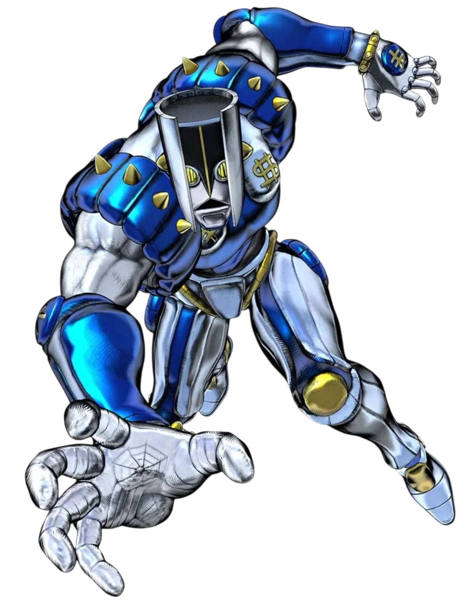

← กลับไปเลือก Stand
PLAYSTYLE • Space Gauge • ดึงศัตรู • ERASE
THE HAND
The Hand เด่นเรื่องบริหาร Space Gauge ก้อนเดียว การเคลื่อนที่ การดึง และ ERASE เก่งมากแต่แย่งทรัพยากรกัน
ปรับคู่มือตามไฟล์ล่าสุด • Core v0.23.0.280
ความยากกลาง–สูง
Space สูงสุด100
ฟื้นเอง2/วิ
ERASE ใช้35
SPACE GAUGE
Max 100 • +2/sec passive
Punch/Rush ช่วยเติม Space ได้ด้วย สกิล 3 และ 4 ใช้ Gauge ก้อนเดียวกัน ถ้าใช้เคลื่อนที่มั่วอาจเหลือไม่พอ ERASE
ตัวอย่าง: ก่อนเข้าห้องอันตราย ถ้าตั้งใจเก็บ ERASE ไว้แก้ฉุกเฉินควรเหลืออย่างน้อย 35 Space
Skill 1 — PUNCH
CD 0.48s • Range 2.8
หมัดประชิดปกติและช่วยเติม Space เมื่อโดนจริง
ตัวอย่าง: ใช้หมัดปกติเติม Space กลับก่อน แทนการกดสกิลเคลื่อนที่ซ้ำแล้วกิน Gauge เพิ่ม
Skill 2 — BARRAGE
CD 5.4s • Range 3.05
รัวหมัดกดดันระยะใกล้และช่วยเติม Space จากการโดนหลายฮิต
ตัวอย่าง: เหมาะตอนต้องการทั้งดาเมจและเติมทรัพยากรก่อนใช้ Pull/Erase รอบถัดไป
Skill 3 — SPACE
Tap movement: 35 • Full Pull: 20
กดสั้นใช้ Gauge มากกว่าเพื่อเคลื่อนที่ ส่วนชาร์จเต็มใช้ Pull ที่ถูกกว่าเพื่อดึงเป้าจากระยะไกล
ตัวอย่าง: ดึงซอมบี้ตัวหน้าจากประตูออกมาก่อน แทนการเดินเข้าไปเจอทั้งฝูงพร้อมกัน
Skill 4 — ERASE
CD 25s • Range 3.25 • Cost 35
ลบเป้าระยะใกล้ที่มีมูลค่าสูง แต่กิน Gauge 35 ทำให้หลังใช้แล้วอาจเหลือไม่พอสำหรับเคลื่อนที่ทันที
ตัวอย่าง: อย่าใช้ ERASE กับซอมบี้เดี่ยวที่ไม่อันตราย ถ้ากำลังจะเข้าฝูงใหญ่และต้องเก็บ Gauge ไว้หนี
วิธีคิดเวลาเล่น STAND นี้
ไม่ต้องจำศัพท์ยาก
จำวงจรง่าย ๆ ว่าอะไรใช้เติมทรัพยากร อะไรใช้ทรัพยากร และสกิลไหนแก้สถานการณ์ตรงหน้า
ใช้ตัวอย่างเป็นแนวทาง
ตัวอย่างด้านบนไม่ใช่คอมโบบังคับ แต่ใช้บอกว่าระบบนั้นมีไว้แก้ปัญหาอะไร แล้วคุณค่อยปรับตามไฟต์จริง